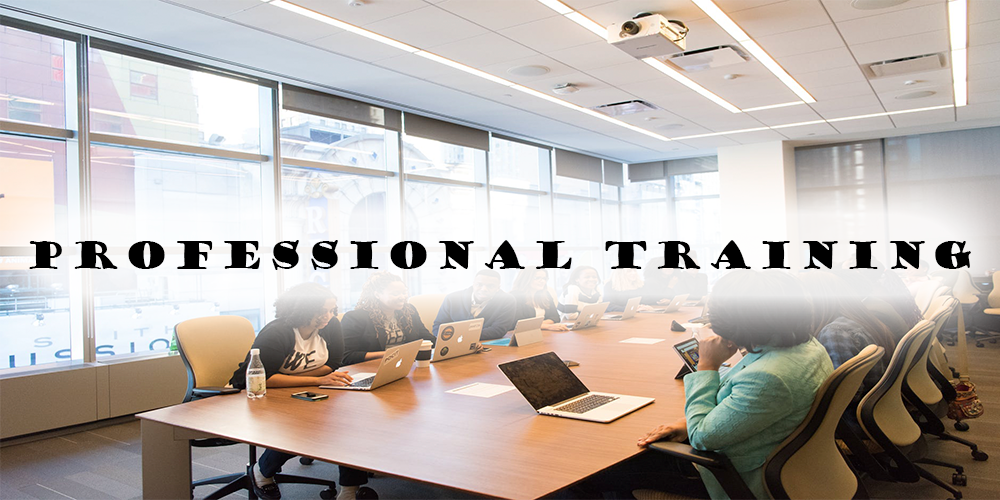
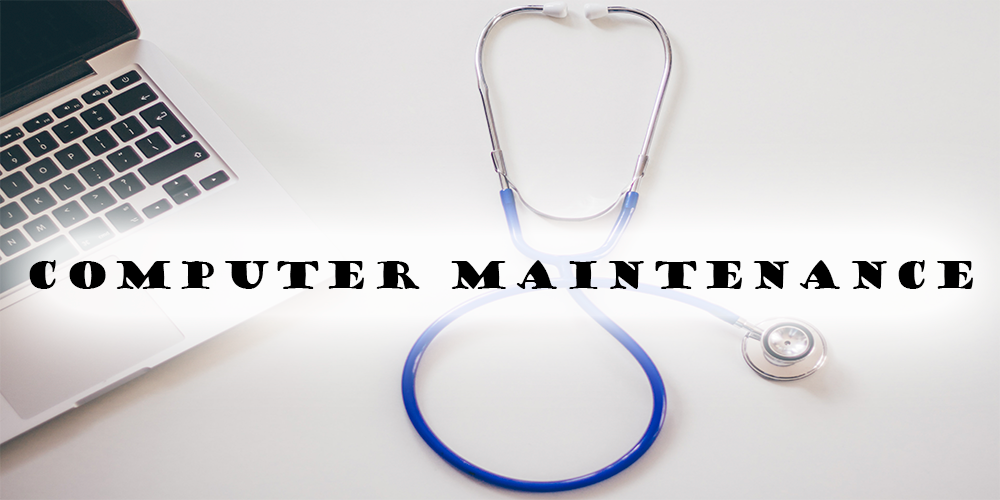
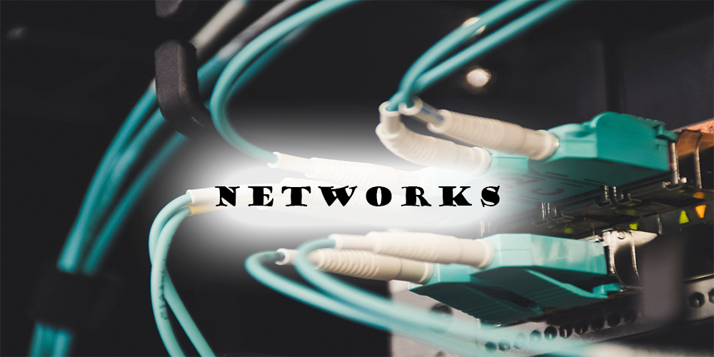
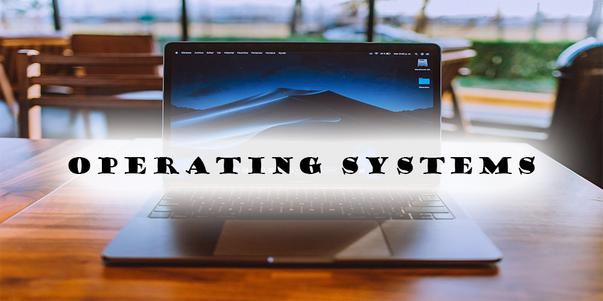

|
The use of IT tools to work in a office (.docs, .pptx, .xlsx and .accdb). | 
You will learn basic concepts and tips about how job market works. |
Basic English level formation (A2). |
| 
A guide for basic maintenance of hardware and software. | 
We learn the basic concepts of networks, protocols and tools to manage them. | 
We study how Operative Systems work, their types and what we can do with them. |